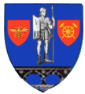

- alba
- arad
- arges
- bacau
- bihor
- bistrita-nasaud
 botosani
botosani- braila
- brasov
- buzau
- calarasi
- caras-severin
- cluj
- constanta
- covasna
- dambovita
- dolj
- galati
- giurgiu
- gorj
- harghita
- hunedoara
 ialomita
ialomita- iasi
- ilfov
- maramures
- mehedinti
- mures
- neamt
- olt
 prahova
prahova- salaj
- satu_mare
- sibiu
- suceava
- teleorman
- timis
- tulcea
- valcea
- vaslui
- vrancea
Sursă